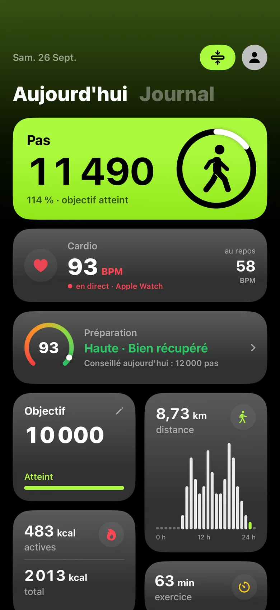
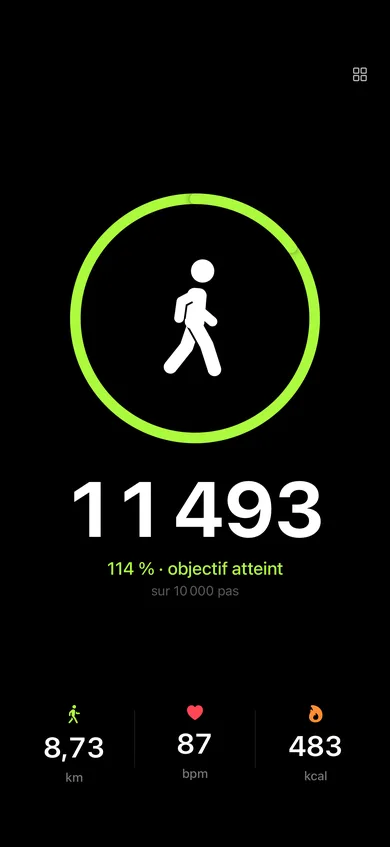
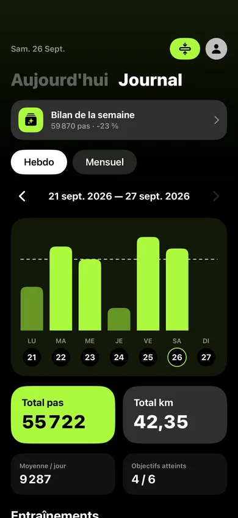
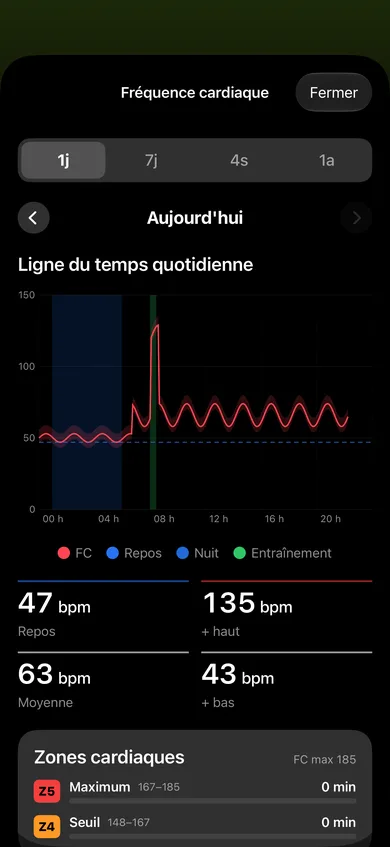
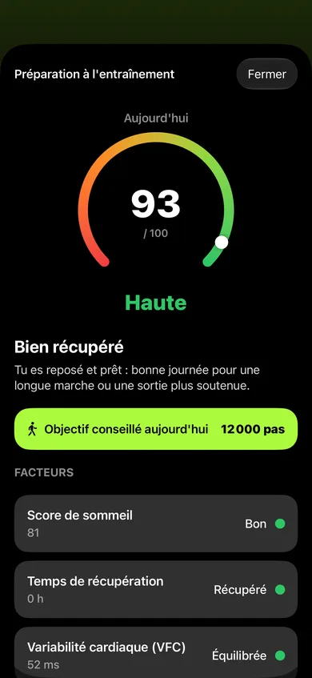

Your steps.
Nothing else.
FabStep counts your steps on iPhone and Apple Watch, with your live heart rate. No account, no ads, no subscription — and no data collected.
iPhone · Apple Watch (Ultra first)

- 0accounts
- 0ads
- 0subscriptions
- 100%on your devices
Features
The essentials, writ large.
Numbers you can read at a glance. No endless menus, no social network.
-
Real-time steps
The motion sensor moves the counter as you walk, with no delay.
-
Live heart rate
Your heart rate streams in from your Apple Watch, with a heart that beats in time with yours.
-
Calories and distance
Active calories, distance and exercise minutes, calculated from your Health data.
-
Adaptive goal and streak
FabStep suggests a goal based on how you feel today. And your day streak keeps the momentum going.
-
Readiness
A score out of 100 based on your sleep, HRV and recovery.
-
Log and widgets
Your week day by day, with the goal as a dotted line. And your steps on both the Home Screen and the Lock Screen.
iPhone
Made for iPhone.
One screen for each question: where am I at, how's my heart, am I in shape, and how's my week?
-

Full screenA single number, extra large. -

LogYour week day by day, goal as a dotted line. -

Heart rateYour day, from sleep to effort zones. -

ReadinessA score out of 100 and a suggested goal.
Apple Watch
Designed for the wrist.
Built first for Apple Watch Ultra: big numbers, one gesture per screen.
-
ReadyOne tap, 3-2-1 with beeps, and off you go. -
Steps and heartYour steps in large type, and a heart beating at the measured rate. -
PauseA long press on the screen pauses the session. -
WorkoutTimer, distance and calories for your walk. -
ReadinessHow you're doing today, based on sleep, HRV and resting heart rate. -
HistoryToday and the last 7 days, without reaching for your iPhone.
Community
Walk with us.
The app stays quiet. The conversation happens elsewhere, on WhatsApp — and only if you feel like it.
-
The weekly challenge
Every week, one shared goal to take on together. The app stays free of social feeds: it happens here.
-
You vote on what's next
Upcoming features go to a poll: your voice shapes what gets built.
-
A direct line to the developer
FabStep is made by one person. Your questions reach them directly — no help desk, no bot.
-
First to know
New releases announced here first, plus a look behind the scenes at what's in the works.
English-speaking Community
The group in English.
Communauté francophone
The group in French.
On a computer? Scan the QR code with your phone.
Optional, free, and you can leave whenever you like. WhatsApp is a Meta service: in a group, your phone number is visible to the admins and to the other members. Only want the announcements? Join the community without a group: your number is then visible to the admins only. The FabStep app itself still collects nothing. Learn more
Privacy
Your data stays with you.
Everything is calculated on your iPhone and your watch. Nothing goes anywhere else.
Zero data collected. None.
-
No account
No sign-up, no email, no password. You open the app, it counts.
-
No server
No data sent over the Internet. Your iPhone and your watch talk to each other directly.
-
Read-only Health access
FabStep reads your Health data to display it. It writes nothing there and shares it with no one.
Ready to walk?
FabStep is available on the App Store, for iPhone and Apple Watch. No account, no ads, no subscription.